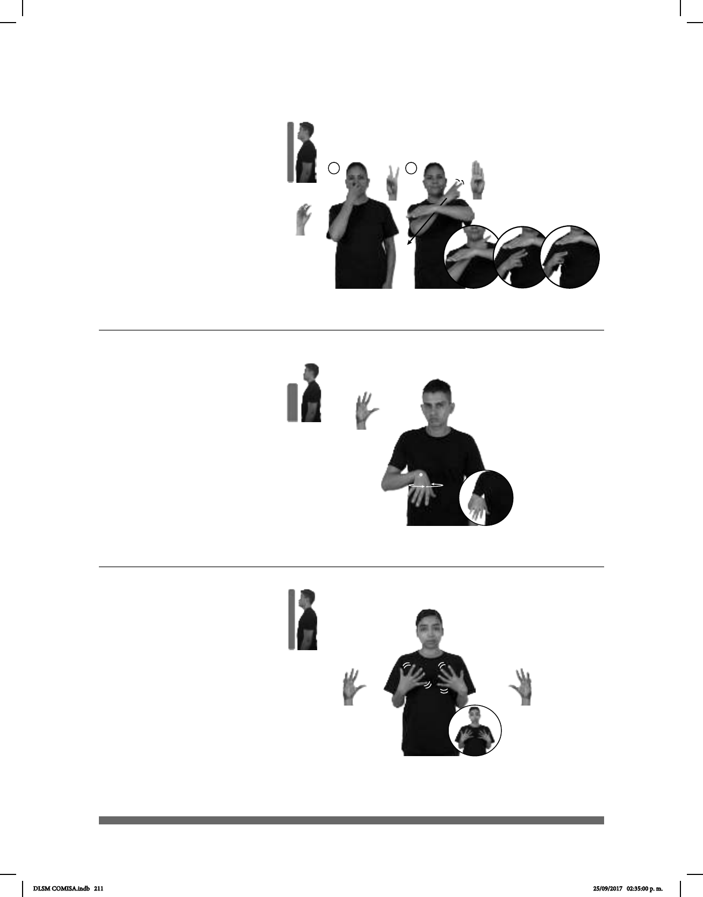

211
Seña: SC: I. SM; II. SB
I. 5.25; II. MD 2.1, MB B-P.1
I. Palma hacia adentro; II. MD palma
oblicua hacia la izquierda y hacia abajo. MB palma
hacia abajo.
I. Sobre la boca; II. MD del hombro a
la cintura, del lado izquierdo al derecho, MB a la
altura del pecho.
II. MD recto mientras los dedos
índice y medio se tocan y se separan repetida-
mente.
: Labios soplando.
sust. m. Conjunto de las técnicas y las
actividades que requiere la profesión o el deporte
de sumergirse y explorar los fondos marinos
mediante aparatos que alimentan de aire a sus
practicantes.
Seña: SM
5.2
Palma hacia abajo.
A la altura del pecho.
La muñeca se mueve
formando círculos.
v. tr. Hacer algo para
hallar o conseguir a alguien o algo.
Buceo (5-G 55)
___muy_
pro-YO GUSTAR BUCEO
Me gusta mucho bucear.
Buscar (5-G 56)
______________________neg_
UN LIBRO pro-YO BUSCAR PERO pro-YO NO ENCONTRAR NO
Busco un libro, pero no lo encuentro.
(5-G 57)
Seña: SS
5.2
Palmas hacia adentro.
A la altura del pecho.
Recto hacia enfrente
repetidamente.
sust. m. Ambos pechos
del cuerpo de la mujer.
pro-ELLA TENER BUSTO PEQUEÑO
Ella tiene busto pequeño.
DLSM COMISA.indb 211 25/09/2017 02:35:00 p. m.